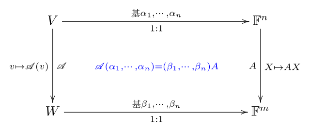

7.2 线性映射与矩阵的对应
围绕线性映射与矩阵的对应展开定义、性质、计算与应用。
进度0%
掌握 0 / 3§7.2.1
线性映射与矩阵的对应 · 第1页
线性映射 / 线性映射与矩阵的对应
设\({\mathscr A}\)为从\(n\)维\({\mathbb F}\)-向量空间\(V\)到\(m\)维\({\mathbb F}\)-向量空间的一个线性变换.分别取定\(V\)和\(W\)的一组基\(\alpha_1,\cdots,\alpha_n\)和\(\beta_1,\cdots,\beta_m\).
对任意\(j=1,2,\cdots,n\), 设\({\mathscr A}(\alpha_j)\in W\) 在基\(\beta_1,\cdots,\beta_m\)下的坐标为\((a_{1j},\cdots,a_{mj})^T\),
即
\[{\mathscr A}(\alpha_j) = a_{1j}\beta_1 + \cdots + a_{mj}\beta_m.\]
则这一式子可改写为
\[{\textcolor[rgb]{0,0,1}{{\mathscr A}(\alpha_1,\cdots,\alpha_n) := \Big({\mathscr A}(\alpha_1),\cdots,{\mathscr A}(\alpha_n)\Big) = (\beta_1,\cdots,\beta_m)A}},\]
其中 \(A:=(a_{ij})_{m\times n}\in F^{m\times n}\).
称 \(A\) 为线性映射 \({\mathscr A}\) 在基 \(\alpha_1,\cdots,\alpha_n\)和\(\beta_1,\cdots,\beta_m\)下的矩阵.
证: 记\(e_1,\cdots,e_n\)为\({\mathbb F}^n\)的自然基, \(e'_1,\cdots,e'_m\)为\({\mathbb F}^m\)的自然基.则
\({\mathscr A}(e_1,\cdots,e_n):=({\mathscr A} e_1,\cdots,{\mathscr A} e_n)=(A e_1,\cdots,A e_n)=A(e_1,\cdots,e_n)=AI_n=A=I_mA=(e'_1,\cdots,e'_m)A\).
从而,我们得到如下一一对应:
\(\left\{\text{从$V$到$W$的}\atop \text{全体线性映射}\right\}\) \(\underset{1:1 \atop {\mathscr A}(\alpha_1,\cdots,\alpha_n) = (\beta_1,\cdots,\beta_n)A}{\overset{\text{基} \alpha_1,\cdots,\alpha_n \atop \text{基} \beta_1,\cdots,\beta_m }{\leftrightarrow}}\) \({\mathbb F}^{m\times n}\)
这页感觉如何？
§7.2.2
线性映射与矩阵的对应 · 第2页
线性映射 / 线性映射与矩阵的对应
换言之,线性映射的作用可以通过对坐标左乘矩阵\(A\)实现.
即,下图交换


证明思路: \({\mathscr A}(v)={\mathscr A}((\alpha_1,\cdots,\alpha_n)X) = {\mathscr A}(\alpha_1,\cdots,\alpha_n)\cdot X=(\beta_1,\cdots,\beta_m)A \cdot X= (\beta_1,\cdots,\beta_m) \cdot AX\).
这页感觉如何？
§7.2.3
线性映射与矩阵的对应 · 第3页
线性映射 / 线性映射与矩阵的对应

这页感觉如何？